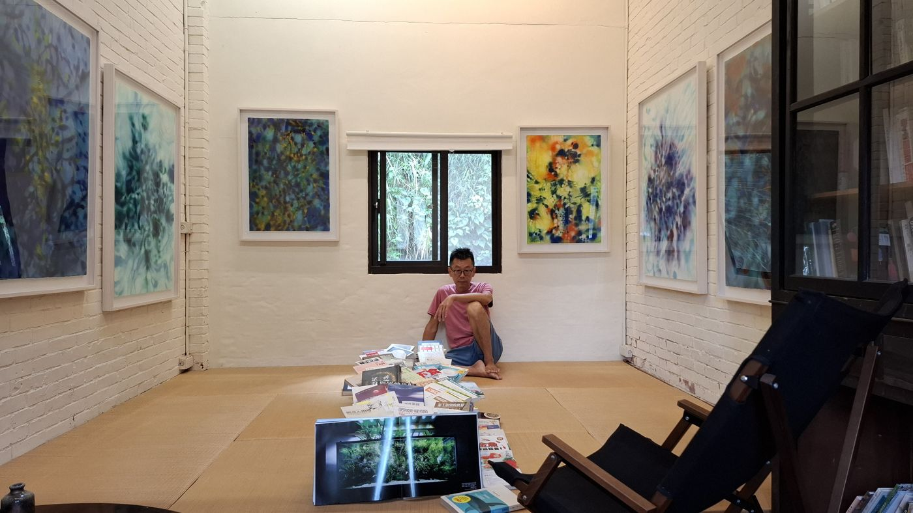

량즈칭 Zhi-Qing Liang
작가 약력
량즈칭은 1964년 대만 먀오리 위안리에서 태어나 위안리 화실에서 작업합니다. 옛 이름은 「량가오쿠이(梁高魁)」입니다(확인 중).
젊은 시절 타이베이에서 극장과 연예계의 무대 디자인과 시공 감독 일을 했고, 여러 해 뒤 위안리로 돌아와 전업으로 창작합니다(귀향 연도 확인 중). 1990년대에는 「량가오쿠이」라는 이름으로 추상 작품을 발표했고(확인 중), 2004년부터는 「량즈칭」이라는 이름으로 발표합니다. 2010년에 《존재(存有)》를 출간했습니다.
사실과 추상, 두 갈래 길을 그는 동시에 걷습니다. 한쪽에는 파초, 녹나무, 백합, 고목이 있고, 다른 쪽에는 선, 점, 빛과 흐름이 있습니다.Rti 중앙방송는 그를 대만에서 추상화와 사실화를 함께 그리는 극소수의 작가라고 표현했습니다.



작가의 말
바쁘고 정보가 넘쳐나는 오늘날, 우리가 접하는 모든 글과 영상과 정보는 「지식」일 뿐 「감각」이 아닙니다.진저우칸(今周刊) 2018(광고 기획, 원 발언 확인 중)
여름에 여기서 맥주 한 캔을 마시는 것, 그야말로 인생 최고의 즐거움입니다!진저우칸(今周刊) 2018(광고 기획, 원 발언 확인 중)
개인전
| 1995 | 욕망의 사유 | 狀況展示空間．非觀點(타이중) |
| 1998 | 내면 풍경 98 | 誠品西門店(타이베이) |
| 1998 | 내면 풍경 98 | 위안리 해변 예술문화센터(먀오리) |
| 1999 | 심상 99 | 科元藝術中心(타이중) |
| 2009 | 따라 걷기 | 金枝藝術(먀오리 위안리) |
| 2010 | 흐름 | 科元藝術中心(타이중) |
| 2012 | 꽃－형과 색 | 非畫廊(타이베이) |
| 2012 | 천년의 꽃 | 타이베이 국제 아트페어, 非畫廊(타이베이) (연도 확인 중) |
| 2018 | 빛의 변화 | 水色藝術工坊(타이난) |
| 2024 | 우발 시리즈 abiogenesis 수채화전 및 강연 | 먀오리 위안리 |
새로 찾았으나 아직 약력에 넣지 않은 개인전(포함 여부 확인 중)
| 2017 | 여름 남풍 | 亞米藝術 YAMI ART SPACE(타이중) (개막일 확인 중) |
| 2019 | 빛의 변화 아트전 | 里亞行旅(자이) |
단체전
| 1996 | 욕망의 사유 신예전 | 敦南誠品畫廊(타이베이) |
| 2001 | 아름다운 섬－현대 사실전 | 科元藝術中心(타이중) |
| 2001 | 밀레니엄 아우라－추상 자연 4부작 | 鳳甲美術館(타이베이) |
| 2004 | 욕망의 사유 | 成大藝術中心(타이난) |
| 2005 | 시간과 기억 | 成大藝術中心(타이난) |
| 2006 | 풀잎－현대 지본 작품전 | 科元藝術中心(타이중) |
| 2006 | 타이베이 국제 아트페어 | 金禧美術(타이베이) |
| 2006 | 현대 회화 단체전 | 金禧美術(타이중) |
| 2010 | 변이하는 풍경 | 上海月湖美術館(상하이) |
| 2010 | 또 한 권의 책 | 貴點藝術中心(베이징) |
| 2010 | 예기(禮記) | 世界畫廊(타이중) |
| 2014 | 잘 살아가기 전 | 世界畫廊(타이중) |
| 2015 | 예기(禮記) | 世界畫廊(타이중) |
| 2017 | 오월의 물결 | 80 藝術空間(타이난) |
강연
| 1999 | 아름다움을 말하다 | 科元藝術中心(타이중) |
| 2000 | 예술과 생명 | 라이온스클럽(타이중) |
| 2008 | 미학과 생명 | 타이중과학기술학원 광고학과 |
| 2009 | 생활에서 보는 아름다움 | 朵薩 Dosha 타이중 플래그십관 |
| 2010 | 삶은 의미를 찾아야 하는가? | 誠品信義書店(타이베이) |
| 2011 | 아름다움에 대하여 | 로터리클럽(타이베이) |
| 2024 | 회화라는 일에 대하여(두 차례, 우발 시리즈 수채화전) | 먀오리 위안리 |
저서와 경매
| 2010 | 《존재(存有)》, 발언권출판사 |
| 2020 | 홍콩 폴리 옥션 근현대 미술:《마젠타 백합》, 《따라 걷기 No.36》 |